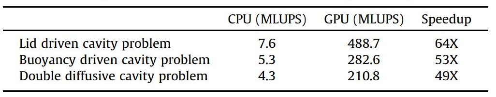
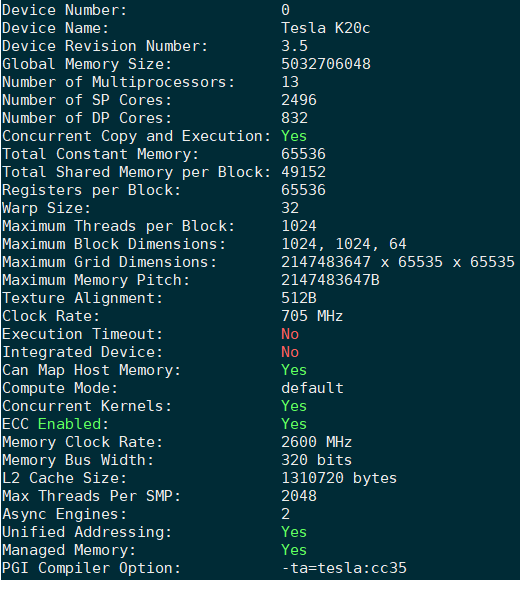
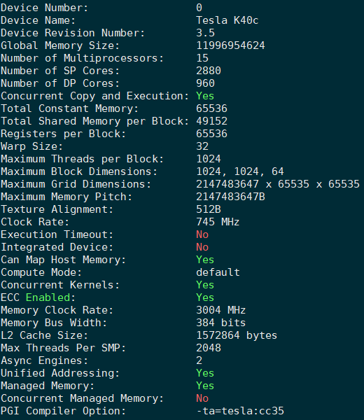
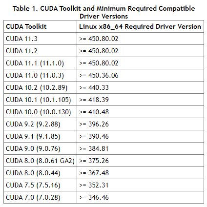
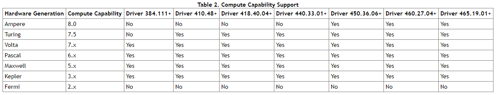

Open Accelerators (OpenACC) Open Accelerators (OpenACC) is a programming standard for parallel computing of heterogeneous CPU/GPU system. Sample OpenACC code Calculate Pi Compile Example to compile OpenACC code: $ nvfortran -acc=gpu -Minfo=all calPi_OpenACC.F90 -o calPi Obsolete: $ pgf90 -acc -ta=tesla:cc35 -Minfo=all calPi_OpenACC.F90 -o calPi Note: As of August 5, 2020, the "PGI Compilers and Tools" technology is a part of the NVIDIA HPC SDK product available as a free download from NVIDIA (see the news at https://news.developer.nvidia.com/hpc-sdk-ga-2020/) Running nohup ./calPi & On Tianhe-2: #!/bin/bash module load PGIcompiler/17.1 yhrun -n 1 -N 1 -p gpu ./lidACC yhbatch -N 1 -p gpu ./job.sh Example: Accelerated lattice Boltzmann simulation using OpenACC In these tests, the mesh size 2048*2048, and the iterative steps are 20,000. The collision models are multiple-relaxation-time (MRT) models. All the simulations use double-precision floating point arithmetic. The following table gives performance comparison between CPU and GPU based LB algorithm implementation. Here, MLUPS is short for million lattice updates per second. (Ref: Xu, 2017, Int. J. Heat Mass Transf.)  Running PGI-supplied tool $ pgaccelinfo   Cuda toolkit and minimum required compatible driver versions  Compute capability support  High performance computing techniques (Read more...) Open Multi-Processing (OpenMP) Message Passing Interface (MPI) Open Accelerators (OpenACC)